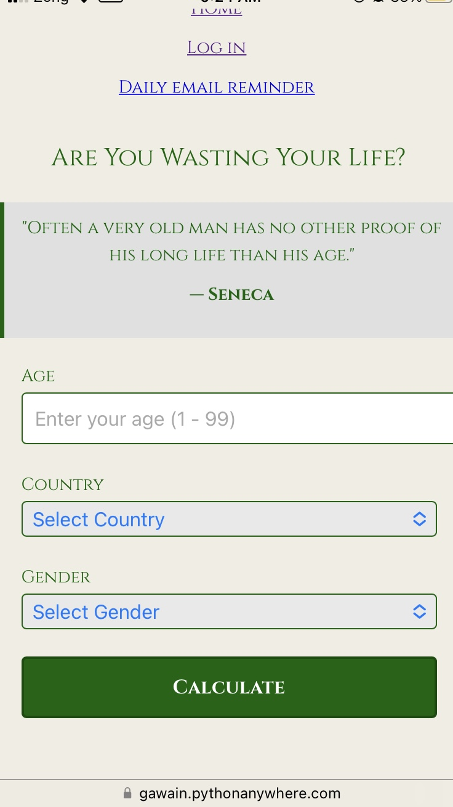

Life Expectancy Calculator
This is a placeholder description for the Life Expectancy Calculator. Users can enter their demographic details to get a personalized life expectancy estimate based on statistical data. It’s a proof of concept exploring how analytics can inform personal health and lifestyle decisions.
